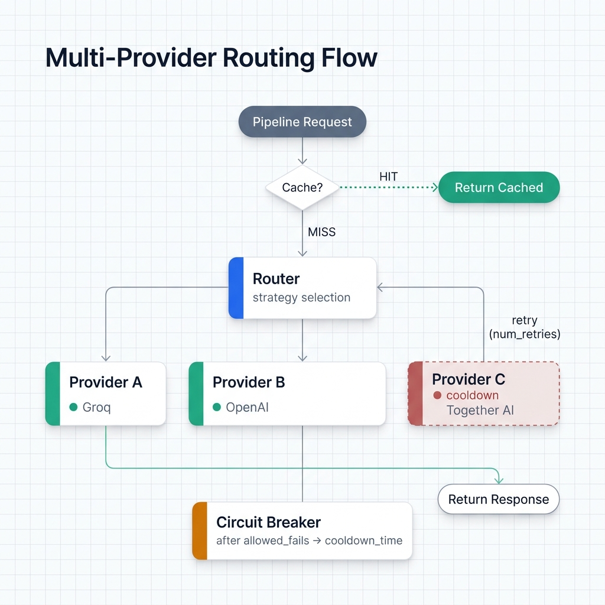
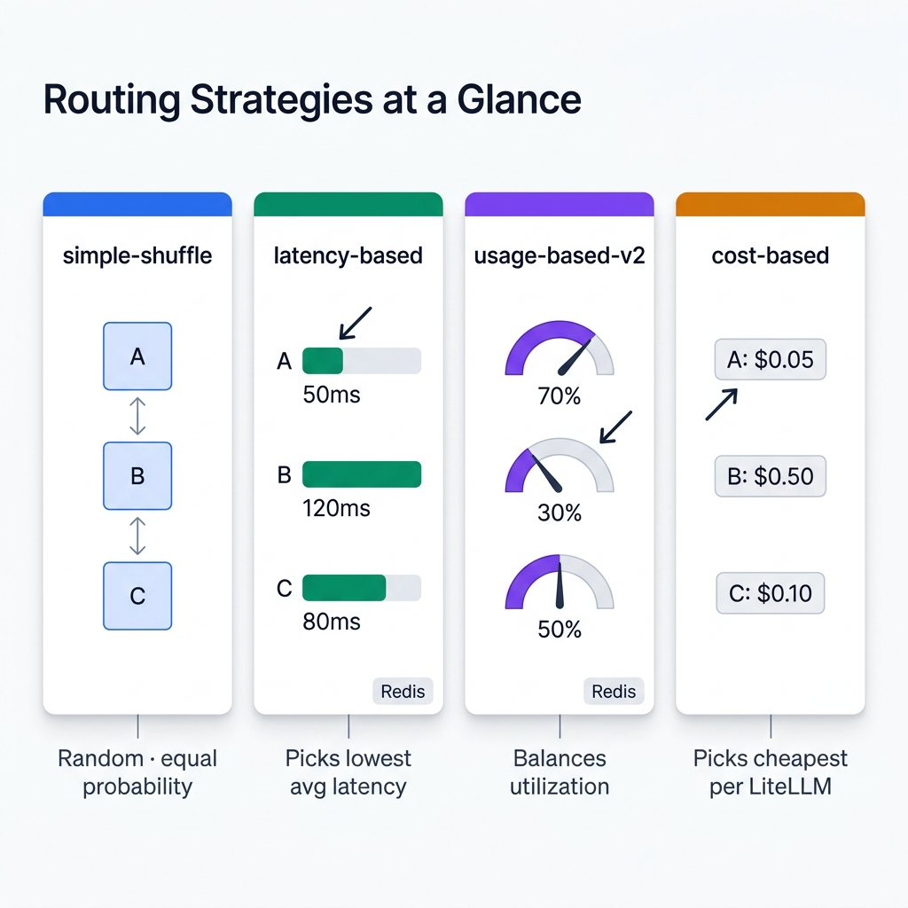

Routing¶
LLM routing lets one pipeline spread requests across multiple model deployments — different providers, models, or API keys — with automatic failover, load balancing, and circuit breaking. Ondine wraps this in with_router(), which configures a LiteLLM Router under the hood.
What LLM Routing Solves¶
A single provider has real limits. Rate limits throttle your throughput. Outages halt processing. Pricing may not fit your workload. A router abstracts all of that:
- Failover — Groq starts erroring? Requests automatically shift to OpenAI.
- Load balancing — spread 1,000 concurrent requests across three deployments instead of hammering one.
- Cost optimization — route to the cheapest provider that meets your latency needs.
- Resilience — a built-in circuit breaker pulls failing providers into cooldown instead of retrying forever.

with_router()¶
Signature¶
def with_router(
model_list: list[dict],
routing_strategy: str = "simple-shuffle",
timeout: int = 120,
num_retries: int = 2,
redis_url: str | None = None,
allowed_fails: int = 3,
cooldown_time: int = 60,
**router_kwargs,
) -> PipelineBuilder
Parameters¶
| Parameter | Type | Default | Description |
|---|---|---|---|
model_list |
list[dict] |
required | Deployment configurations (see below) |
routing_strategy |
str |
"simple-shuffle" |
Strategy for selecting a deployment per request |
timeout |
int |
120 |
Request timeout in seconds |
num_retries |
int |
2 |
Retry attempts using other deployments on failure |
redis_url |
str \| None |
None |
Redis URL for distributed state |
allowed_fails |
int |
3 |
Failures before a deployment enters cooldown |
cooldown_time |
int |
60 |
Cooldown duration in seconds |
**router_kwargs |
Any additional LiteLLM Router parameter |
The model_list Format¶
Each entry in model_list is one deployment. The model_name field is the shared logical name the router uses for load balancing — if multiple entries share the same model_name, they're treated as interchangeable replicas.
{
"model_name": "my-model", # Logical name (shared across replicas)
"model_id": "groq-llama", # Optional: friendly ID for tracking
"litellm_params": {
"model": "groq/llama-3.3-70b-versatile", # LiteLLM model string
"api_key": "...",
"rpm": 30, # Optional: per-deployment rate limit
}
}
Quick note: deployments with different model_name values don't get load-balanced against each other — they're separate pools. For automatic failover, all deployments need the same model_name.
Basic Usage¶
Failover between two providers¶
The simplest setup. Two deployments, same model_name. The router splits traffic between them and fails over automatically if one goes down.
import os
from ondine import PipelineBuilder
pipeline = (
PipelineBuilder.create()
.from_csv("data.csv", input_columns=["text"], output_columns=["label"])
.with_prompt("Classify: {text}")
.with_router(
model_list=[
{
"model_name": "fast-llm",
"litellm_params": {
"model": "groq/llama-3.3-70b-versatile",
"api_key": os.getenv("GROQ_API_KEY"),
"rpm": 30,
},
},
{
"model_name": "fast-llm", # Same name = automatic failover
"litellm_params": {
"model": "openai/gpt-4o-mini",
"api_key": os.getenv("OPENAI_API_KEY"),
"rpm": 500,
},
},
]
)
.build()
)
result = pipeline.execute()
With the default simple-shuffle strategy and two deployments, traffic splits roughly 50/50. If Groq starts returning errors, the circuit breaker kicks in after 3 failures, puts Groq into a 60-second cooldown, and all remaining requests go to OpenAI until Groq recovers.
Routing Strategies¶
The routing_strategy parameter takes any of these values (defined in RouterStrategy):
| Strategy | Value | Best for | Redis required |
|---|---|---|---|
| Simple shuffle | "simple-shuffle" |
General use, testing | No |
| Latency-based | "latency-based-routing" |
Latency-sensitive workloads | Yes |
| Usage-based | "usage-based-routing" |
Balanced utilization | Yes |
| Usage-based v2 | "usage-based-routing-v2" |
Production multi-deployment | Yes |
| Cost-based | "cost-based-routing" |
Minimizing API spend | No |
| Least busy | "least-busy" |
Deployments with different capacities | Yes |
| Weighted pick | "weighted-pick" |
Explicit traffic splits | No |
You can also import RouterStrategy for IDE autocompletion:
from ondine.core.router_strategies import RouterStrategy
.with_router(
model_list=[...],
routing_strategy=RouterStrategy.LATENCY_BASED,
)

Simple shuffle (default)¶
Random selection, equal probability. No external state needed. This is the one you'll use 90% of the time during development.
Latency-based routing¶
Sends each request to the deployment with the lowest recorded average latency. Needs Redis to share latency data across workers.
.with_router(
model_list=[...],
routing_strategy="latency-based-routing",
redis_url="redis://localhost:6379",
)
Weighted pick¶
Routes based on explicit weights. Set a "weight" key in litellm_params for each deployment. Handy when you want most traffic on a fast free-tier provider with a paid fallback catching the rest.
.with_router(
model_list=[
{
"model_name": "llm",
"litellm_params": {
"model": "groq/llama-3.3-70b-versatile",
"api_key": os.getenv("GROQ_API_KEY"),
"weight": 8, # 80% of traffic
},
},
{
"model_name": "llm",
"litellm_params": {
"model": "openai/gpt-4o-mini",
"api_key": os.getenv("OPENAI_API_KEY"),
"weight": 2, # 20% of traffic
},
},
],
routing_strategy="weighted-pick",
)
Cost-based routing¶
Picks the cheapest deployment using LiteLLM's cost database. Costs need to be defined in your model_list or in LiteLLM's built-in pricing tables.
.with_router(
model_list=[
{
"model_name": "llm",
"litellm_params": {
"model": "groq/llama-3.3-70b-versatile",
"api_key": os.getenv("GROQ_API_KEY"),
},
},
{
"model_name": "llm",
"litellm_params": {
"model": "openai/gpt-4o",
"api_key": os.getenv("OPENAI_API_KEY"),
},
},
],
routing_strategy="cost-based-routing",
)
Circuit Breaker / Resilience¶
The circuit breaker is on by default. It stops a failing provider from soaking up requests during an outage.
How it works: - After 3 consecutive failures, the deployment goes into cooldown. - Cooldown lasts 60 seconds. - During cooldown, requests go to healthy deployments only. - After cooldown, the deployment gets re-admitted and monitored again.
Tuning the circuit breaker¶
# More tolerant — allow more failures before cooldown
.with_router(
model_list=[...],
allowed_fails=5,
cooldown_time=120, # Longer cooldown
)
# Stricter — pull a deployment faster
.with_router(
model_list=[...],
allowed_fails=1,
cooldown_time=30,
)
# Disable circuit breaker entirely (not recommended in production)
.with_router(
model_list=[...],
allowed_fails=0,
)
Multi-Provider Load Balancing¶
For high-throughput pipelines, spread load across three or more deployments. Each one can have its own per-deployment rate limit (rpm) in litellm_params.
import os
from ondine import PipelineBuilder
pipeline = (
PipelineBuilder.create()
.from_csv("large_dataset.csv",
input_columns=["text"],
output_columns=["category"])
.with_prompt("Categorize this text: {text}")
.with_router(
model_list=[
{
"model_name": "classifier",
"model_id": "groq-primary",
"litellm_params": {
"model": "groq/llama-3.3-70b-versatile",
"api_key": os.getenv("GROQ_API_KEY"),
"rpm": 25,
},
},
{
"model_name": "classifier",
"model_id": "openai-fallback",
"litellm_params": {
"model": "openai/gpt-4o-mini",
"api_key": os.getenv("OPENAI_API_KEY"),
"rpm": 400,
},
},
{
"model_name": "classifier",
"model_id": "together-secondary",
"litellm_params": {
"model": "together_ai/togethercomputer/llama-2-70b-chat",
"api_key": os.getenv("TOGETHER_API_KEY"),
"rpm": 60,
},
},
],
routing_strategy="usage-based-routing-v2",
redis_url="redis://localhost:6379",
num_retries=2,
timeout=60,
)
.with_concurrency(20)
.build()
)
result = pipeline.execute()
print(f"Total cost: ${result.costs.total_cost:.4f}")
Combining Router with Redis Caching¶
In production, pair the router with with_redis_cache() so you don't waste API calls on duplicate inputs. The cache gets checked before the router picks a deployment, so a cache hit never touches any provider.
import os
from ondine import PipelineBuilder
pipeline = (
PipelineBuilder.create()
.from_csv("support_tickets.csv",
input_columns=["ticket"],
output_columns=["category", "priority"])
.with_prompt("Triage this support ticket: {ticket}")
.with_system_prompt("Classify into: billing, technical, account, other. Assign priority: high, medium, low.")
.with_router(
model_list=[
{
"model_name": "triage-model",
"litellm_params": {
"model": "groq/llama-3.3-70b-versatile",
"api_key": os.getenv("GROQ_API_KEY"),
"rpm": 25,
},
},
{
"model_name": "triage-model",
"litellm_params": {
"model": "openai/gpt-4o-mini",
"api_key": os.getenv("OPENAI_API_KEY"),
"rpm": 400,
},
},
],
routing_strategy="simple-shuffle",
allowed_fails=3,
cooldown_time=60,
)
.with_redis_cache(redis_url="redis://localhost:6379", ttl=86400)
.with_concurrency(15)
.build()
)
Passing Additional LiteLLM Router Parameters¶
with_router() accepts **router_kwargs, which pass straight through to LiteLLM Router. Anything documented at docs.litellm.ai/docs/routing works here.
.with_router(
model_list=[...],
set_verbose=True, # Enable LiteLLM debug logging
enable_pre_call_checks=False, # Skip health checks for faster startup
debug=True, # Enable provider tracking
)
Deployment Distribution Tracking¶
Ondine uses an internal DeploymentTracker to map LiteLLM's internal deployment hash IDs back to the friendly model_id values from your model_list. This drives the progress display during execution, showing you which provider handled each request.
To get readable labels in the progress UI, set model_id on each entry:
{
"model_name": "fast-llm",
"model_id": "groq-llama", # Displayed in progress output
"litellm_params": {
"model": "groq/llama-3.3-70b-versatile",
...
},
}
If you skip model_id, the router falls back to model_name as the label.
Related¶
- Caching — disk and Redis response caching, rate limiting
- Cost Control — budget limits, prefix caching, token optimization
- Execution Modes — concurrency and streaming configuration